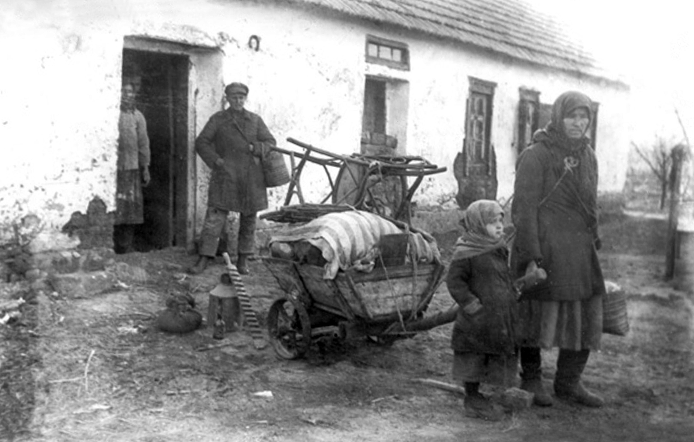

/>
/>
THE HOLODOMOR
The Winter of 1932 to 1933 In the early 1930s, the Soviet government under Joseph Stalin launched a campaign of rapid industrialization and forced agricultural collectivization. Ukraine, known as the "breadbasket of Europe," became the primary target for grain extraction. When Ukrainian farmers resisted the seizure of their land and crops, the state responded not with negotiation, but with a calculated policy of starvation.

/>By the winter of 1932, the Soviet state had increased grain quotas to impossible levels while simultaneously seizing every scrap of food from rural households. Internal passports were restricted to prevent starving villagers from fleeing to the cities for help. Blacklisting entire villages meant no goods or food could enter, and leaving was forbidden. Estimates suggest that between 3.9 million and 7 million people perished within a single year. Unlike a natural famine caused by drought, the silos in the cities were full of grain intended for export to fund industrial machinery while the people who grew it died in the streets.
Key Facts
Date: April 21, 1930
Location: Columbus, Ohio
Casualties: 322 dead, hundreds injured; remains the deadliest prison fire in U.S. history and a pivotal turning point for national prison reform.
Cause: A fire originating in construction scaffolding that rapidly consumed an overcrowded, poorly ventilated facility, compounded by a catastrophic delay in unlocking cell doors.
Strategic Response: From Denial to Global Recognition The immediate strategy employed by the Soviet Union was one of Total Information Blackout. Foreign journalists were largely barred from the region, and those who did report the truth were often discredited by state-sanctioned narratives. It was a strategy of "aggressive forgetting" designed to make the world believe the Soviet system was a booming success.
The Erasure Strategy: For decades, the tragedy was scrubbed from Soviet textbooks and official records. It was only through the oral histories of survivors and the opening of Soviet archives in the 1990s that the full scope was revealed.
The Recognition Goal: Today, the strategy for modern historians and the Ukrainian state is one of "Holodomor Remembrance." This involves securing international recognition of the event as a genocide, ensuring that the strategic use of food as a weapon is never erased from the global consciousness again.
The Lesson: The Holodomor is a stark warning of how centralized power can use administrative "strategies" to commit mass murder without firing a single bullet. It teaches us that tragedies can be manufactured through policy and that the suppression of information is the final stage of any intentional disaster.